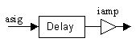
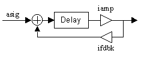
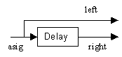
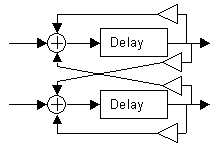

Processing
Features
Departments
Delay
Hans Mikelson
Introduction
Delay or echo is one of the simplest and most commonly used sound effects. It is also the basis for almost all other effects such as chorus, flanging and phasing. Even digital filtering and waveguide physical modeling is based on delays. This article describes using delays to create echo effects.
Using Zak
There are two typical ways to use sound effects with Csound. Using the Zak opcodes and using global variables. I always use the Zak system because it is much more flexible. I will describe briefly how to use it here without going into too much detail. The Zak system is like having an array of global variables. These variables are referenced by number instead of by name. There are actually two arrays, one for i-rate and k-rate signals and the other for a-rate signals. Before the Zak system can be used it must be initialized to allocate space for the arrays. This is done using the zakinit statement which is usually placed just after the other initial statements for sample rate, control rate, etc. In the following statement space is allocated for 50 audio channels and 50 control channels.
zakinit 50,50
The Zak channels are written to using a statement such as
zawm asig, ichannel
and read from using
asig zar ichannel
In this case asig is the audio signal and ichannel would be a number from 0 to 49 which is usually passed as a p-field to the instrument. The 'm' indicates that the new audio signal is to be mixed with the current contents of the channel. This is needed if more than one instance of the instrument writing to the Zak channel is running at the same time for example when a chord is played. If zawm is used it is usually necessary to clear the channel after it is read from. This is done with zacl. I usually create an instrument numbered 99 where I clear all of the Zak channels when I am using the Zak system. I leave this instrument on for the entire duration of the piece or at least as long as I run any instruments using zawm.
instr 99
zacl 0, 50 ; Clear the audio channels
zkcl 0, 50 ; Clear the control channels
endin
Simple delays
Sound effects are usually written as separate instruments. The sound effect instrument is turned on during the entire time it is used while the instrument generating the sound may be called many times. Below is an example of a simple delay.
instr 10
idur = p3 ; Duration
iamp = p4 ; Amplitude
itime = p5 ; Delay time
iinch = p6 ; Input channel
; Declick envelope
aamp linseg 0, .002, iamp, idur-.004, iamp, .002, 0
asig zar iinch ; Read from the zak channel
adel delay asig, itime ; Delay the signal
outs adel*aamp, adel*aamp ; Output the delayed signal
endin

Figure 1 Flowchart for a simple delay.
The signal asig is delayed by itime seconds. A de-click envelope is used to prevent sudden cut-off of the signal which can occur when the signal is delayed. The generating instrument is responsible for producing the non-delayed sound. This instrument produces only a single echo. Following is a call to this instrument which will generate a half second delay at half the volume of the original sound.
; Sta Dur Amp Time InCh i10 0 3 .5 .5 1
A slap-back echo can be created by calling instrument 10 with a loud echo and a short delay time such as
; Sta Dur Amp Time InCh i10 0 3 .9 .1 1
Instrument 11 illustrates how the delay opcode may be used to generate feedback delays or regenerative delays.
instr 11
idur = p3 ; Duration
iamp = p4 ; Amplitude
itime = p5 ; Delay time
ifdbk = p6 ; Feedback amount
iinch = p7 ; Input channel
adel init 0 ; Initialize adel to zero
; Declick envelope
aamp linseg 0, .002, iamp, idur-.004, iamp, .002, 0
asig zar iinch ; Read from the zak channel
adel delay asig + adel*ifdbk, itime ; Delay the signal
outs adel*aamp, adel*aamp ; Output the delayed signal
endin

Figure 2 Flowchart for a simple delay with feedback.
The first step when generating a feedback delay is to intialize adel to zero. The init statement is executed at i-time only. If adel is not initialized Csound will complain when it appears on the right side of the delay opcode.
; Sta Dur Amp Time Fdbk InCh i11 0 4 .5 .5 .5 1
Stereo Delay
A short delay of 20-30 milliseconds can be used to give a stereo effect to a monophonic sound.
instr 2
idur = p3 ; Duration
iamp = p4 ; Amplitude
ifqc = cpspch(p5) ; Pitch
ioutch = p6 ; Output channel
istdel = p7 ; Stereo delay
; Declick envelope
aamp linseg 0, .002, 1, idur-.004, 1, .002, 0
; Generate a plucked tone
asig pluck iamp, ifqc, ifqc, 0, 1
;asig fmwurlie iamp, ifqc, 1, 1.2, .02, .6, 1, 1, 1, 1, 1
aout = asig*aamp
adel delay aout, istdel ; Delay 30 msec.
outs aout, adel*aamp ; Output stereo
endin

Figure 3 Flowchart for a stereo effect.
This instrument would be called with
; Sta Dur Amp Pitch OutCh Delay i2 0 .25 15000 8.04 1 .030
Multi-tap delays
The next instrument can be used to create a multi-tap delay. The delay times and levels are sent to the instrument in tables to make a flexible instrument.
instr 13
idur = p3 ; Duration
iamp = p4 ; Amplitude
itime = p5 ; Delay time
iinch = p6 ; Input channel
itabt = p7 ; Deltap time table
itabv = p8 ; Deltap volume table
; Declick envelope
aamp linseg 0, .002, iamp, idur-.004, iamp, .002, 0
asig zar iinch ; Read from the zak channel
atmp delayr itime ; Read the delay line
it0 table 0, itabt ; Delay time 0
it1 table 1, itabt ; Delay time 1
it2 table 2, itabt ; Delay time 2
it3 table 3, itabt ; Delay time 3
it4 table 4, itabt ; Delay time 4
it5 table 5, itabt ; Delay time 5
it6 table 6, itabt ; Delay time 6
it7 table 7, itabt ; Delay time 7
iv0 table 0, itabv ; Delay 0 volume
iv1 table 1, itabv ; Delay 1 volume
iv2 table 2, itabv ; Delay 2 volume
iv3 table 3, itabv ; Delay 3 volume
iv4 table 4, itabv ; Delay 4 volume
iv5 table 5, itabv ; Delay 5 volume
iv6 table 6, itabv ; Delay 6 volume
iv7 table 7, itabv ; Delay 7 volume
at0 deltap it0 ; Delay tap 0
at1 deltap it1 ; Delay tap 1
at2 deltap it2 ; Delay tap 2
at3 deltap it3 ; Delay tap 3
at4 deltap it4 ; Delay tap 4
at5 deltap it5 ; Delay tap 5
at6 deltap it6 ; Delay tap 6
at7 deltap it7 ; Delay tap 7
delayw asig*aamp ; Write to the delay line
; Add up the delays and scale by the volumes
adel = at0*iv0+at1*iv1+at2*iv2+at3*iv3+at4*iv4+at5*iv5+at6*iv6+at7*iv7
outs adel*aamp, adel*aamp ; Output the delayed signal
endin
The following tables and instrument call creates a "bouncing ball" echo.
f2 0 8 -8 .2 3 .6 5 1 f3 0 8 -8 1 2 .4 6 .1 ; Multitap delay ; Sta Dur Amp MaxTime InCh TapTimTab TapVolTab i13 0 4 1 2 1 2 3
It should be easy to create a variety of multi-tap delays with this instrument.
Stereo Delays
The next instrument is a simple stereo delay
adell delay asigl + adell*ifdbkl, itiml ; Delay the signal
adelr delay asigr + adelr*ifdbkr, itimr ; Delay the signal
outs adell*aamp, adelr*aamp ; Output the delayed signal
This instrument merely uses separate signals and delays for right and left channels. The next step is to add some cross-feedback so that the right channel can feed into the left channel and the left channel can feed into the right
asavl = adell ; Save the left delay for cross feedback adell delay asigl + adell*ifdbkl + adelr*ixfbl, itiml ; Delay the signal adelr delay asigr + adelr*ifdbkr + asavl*ixfbr, itimr ; Delay the signal
You have to remember to save the left delayed signal before you overwrite it with the left delay opcode. The saved version is then used for cross-feedback. The following call to this instrument implements a ping-pong delay. The sound bounces from one speaker to the other with a ping-pong delay.
; Sta Dur Amp TimL FdbkL XFdbkL TimR FdbkR XFdbkR InChL InChR i15 0 6 .8 .2 0 .8 .2 0 .8 1 2

Figure 4 Flowchart for a stereo cross-feedback delay.
Conclusion
The small sampling of delay examples I present in this article are by no means exhaustive. Variable delays lead to effects such as flanging and chorus, a filter can be added in the feedback path of a delay to create an analog delay sound. Combining slowly variable delays with filtering and multiple cross-feedback paths can be used to create smooth efficient reverbs. These topics will have to wait for a future article.
Links
http://www.harmony-central.com/Effects/Articles/Delay/
Bibliography
Stewart, David. July 1999. "An Introduction to Delay and Echo." Keyboard. pp. 72-74. Miller Freeman.